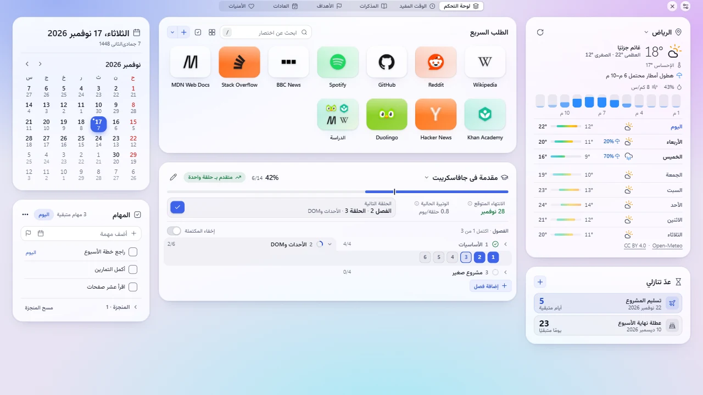
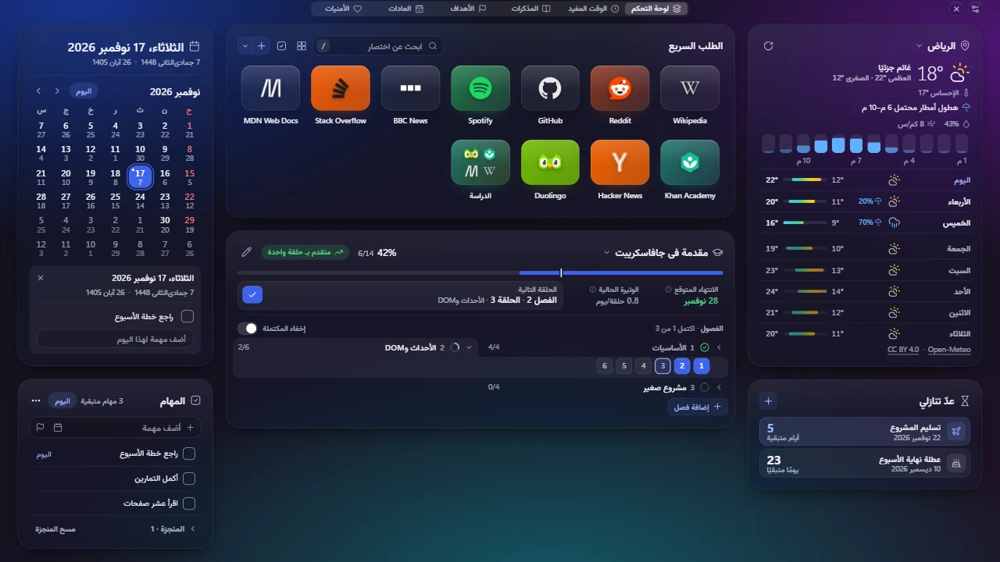

علامة تبويب جديدة في كروم تجمع مهامك وتقويمك
مع Tivona، يمكنك الوصول إلى مواقعك المعتادة ورؤية مهام اليوم وبدء جلسة تركيز من الصفحة نفسها. اعرض التاريخين الميلادي والهجري معًا واختر يومًا من التقويم لإضافة مهمة إليه.
إضافة مجانية لمتصفح كروم على الكمبيوتر. تستبدل Tivona صفحة علامة التبويب الجديدة وتعمل دون حساب Tivona.

خطّط ليومك ورتّب اختصاراتك
الوصول السريع إلى المواقع والإشارات المرجعية
ضع المواقع التي تزورها كثيرًا في مجلدات للعمل أو الدراسة. ابحث عن الاختصار باستخدام لوحة المفاتيح أو استورد مجلدًا من الإشارات المرجعية في كروم.
قائمة مهام بمواعيد وأولويات
أضف إلى مهامك مواعيد إنجاز وأولويات وملاحظات وخطوات. اطّلع على مهام اليوم والمهام المتأخرة، أو اختر يومًا من التقويم لترى المهام المحددة له.
التقويم الميلادي والهجري والفارسي
اعرض التواريخ الميلادية والهجرية والفارسية الشمسية في التقويم الشهري. يمكنك التبديل بينها وعرض أكثر من تاريخ معًا. يعرض التقويم الفارسي العطلات في إيران.
مؤقت بومودورو وسجل وقت التركيز
اضبط مدة التركيز والاستراحة أو استخدم ساعة الإيقاف. ابدأ المؤقت من تفاصيل المهمة وسجّل الوقت الذي قضيته فيها.

اختر الأدوات التي تظهر في اللوحة. يمكنك الاطّلاع على الطقس وإضافة عدّ تنازلي ومتابعة العادات والأهداف والدورات أو كتابة يومياتك.
إعداد علامة التبويب الأولى
- ثبّت Tivona من سوق كروم الإلكتروني وافتح علامة تبويب جديدة.
- أضف موقعًا إلى الاختصارات أو حدّد موعدًا لإنجاز إحدى مهامك.
- اختر اللغة والتقويم والأدوات التي تريد عرضها من الإعدادات.
أسئلة شائعة
هل يمكن استيراد الإشارات المرجعية من كروم؟
من لوحة الوصول السريع، اختر استيراد الإشارات المرجعية من كروم. تطلب Tivona الإذن وتنسخ المجلد الذي تختاره.
ماذا لو كنت أستخدم إضافة أخرى لعلامة التبويب الجديدة؟
يتيح كروم لإضافة واحدة التحكم في صفحة علامة التبويب الجديدة في الوقت نفسه. يمكنك اختيار الإضافات المفعّلة من صفحة الإضافات في كروم.
كيف أنقل مهامي إلى كمبيوتر آخر؟
صدّر نسخة احتياطية من الإعدادات ضمن قسم البيانات، ثم استعد الملف في Tivona على الكمبيوتر الآخر. تتضمن النسخة الاحتياطية قائمة مهامك.
الاستخدام دون اتصال والخصوصية
يعمل التقويم وقائمة المهام واليوميات والمؤقت دون اتصال. يتطلب فتح المواقع وجلب توقعات الطقس أو الأيقونات من الإنترنت اتصالًا بالشبكة.
تبقى مهامك ويومياتك وسجل التركيز على هذا الجهاز. وقد تتزامن بعض الإعدادات والاختصارات عند تفعيل مزامنة كروم. في الإصدارات المهيأة لخدمة PostHog، تكون مشاركة بيانات الاستخدام اختيارية ومعطّلة في البداية. سياسة الخصوصية (بالإنجليزية)
المساعدة والملاحظات
لاستعادة البيانات بعد تحديث الإضافة، افتح الإعدادات ثم البيانات ثم النسخ الاحتياطية التلقائية. لطلب المساعدة، راسل دعم Tivona أو استخدم قسم الدعم في صفحة الإضافة في سوق كروم.